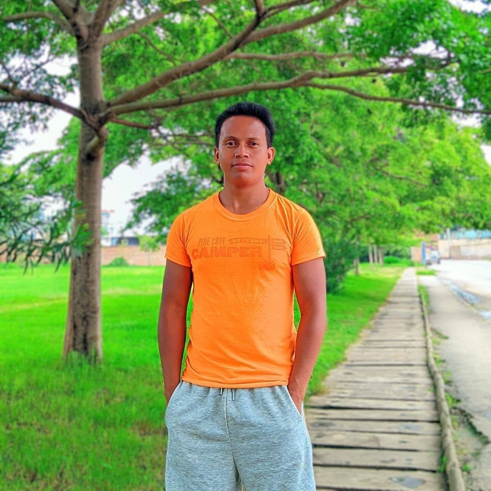

Mini-documentaire
Monteur vidéo · Cadreur · Photographe · Créatif multimédia
Valéry Rafalinjanahary
« Des images qui racontent votre histoire »
Depuis 2017, je façonne des vidéos pour la télévision, les institutions et les marques — du dérushage à l'étalonnage, du cadrage à la photographie. Rigoureux, polyvalent, et attaché à chaque détail qui fait qu'une image raconte vraiment quelque chose.
9
ans d'expérience
2017
premiers pas en TV
FR / MG
clients & projets
À propos

Je m'appelle Valéry Rafalinjanahary, professionnel du multimédia basé à Madagascar, avec plus de 9 ans d'expérience en montage vidéo, cadrage et design graphique. Spécialisé dans la production audiovisuelle TV, les tournages en conditions réelles et en studio, ainsi que la création de contenus visuels.
Rigoureux, polyvalent et orienté qualité, avec un fort sens de la narration visuelle et une bonne capacité d'adaptation aux nouveaux formats digitaux. Une base autodidacte complétée par une formation professionnelle en multimédia, mise en pratique au quotidien sur des formats TV, corporate, événementiels et réseaux sociaux.
Compétences
Les outils que j'utilise au quotidien, et les domaines où j'interviens.
Adobe Premiere Pro
Très bonne maîtrise
Adobe Photoshop
Bonne maîtrise
Adobe After Effects
Bonne base · motion design
Adobe Illustrator
Bonne base · identité visuelle
Montage vidéo professionnel
Montage YouTube 16:9
Montage Short & réel 9:16
Cadrage & reportage terrain
Design graphique & logos
Identité visuelle
Édition podcast
Photographie
Pilotage de drone
Narration visuelle
Gestion autonome de projets
Journalisme travail & emploi (OIT)
Langues
Malagasy langue maternelle
Français intermédiaire avancé
Anglais élémentaire
Formation
Un socle professionnel complété par la pratique du terrain.
E-Media — Ambatomitsangana
Formation professionnelle en multimédia
CSPJ — Tanjombato
Baccalauréat technique en Gestion (G2)
CSPJ — Tanjombato
Brevet d'Études Professionnelles (BEP)
Expérience
9 ans de terrain, du journal TV quotidien aux projets de marque.
Janvier 2017 — Mars 2026
Monteur vidéo & cadreur — Viva Madagascar
Montage quotidien de contenus vidéo à forte contrainte de délai (journal TV, sujets spéciaux). Cadreur polyvalent sur reportages terrain, émissions en studio et événements. Optimisation du workflow de montage pour garantir qualité et rapidité, en collaboration avec journalistes, réalisateurs et équipes techniques.
2024 — 2025
Projets en design graphique — SESA
Création de supports visuels (logos, roll-ups, X-banners) et conception du logo officiel du Secrétariat d'État chargé de la Souveraineté Alimentaire (SESA). Conception et réalisation de vidéos courtes (Reels) pour la page officielle du SESA.
Depuis Mars 2026
Monteur vidéo — Viziocraft
Montage de contenus courts (Short, Reels) et édition de podcast (coupe, synchronisation, amélioration audio). Adaptation des formats selon les plateformes (Instagram, YouTube), en collaboration avec l'équipe et dans le respect des demandes clients.
Freelance & collaborations
Projets audiovisuels & événementiels
Réalisation de vidéos événementielles (événements culturels, institutionnels et privés) pour l'OIT. Prestations en tant que vidéaste et photographe : captation photo/vidéo, interviews, aftermovies. Réalisation de mini-documentaires en collaboration avec FIFATA.
—
Prochaine étape
Emplacement prêt pour une nouvelle collaboration ou réalisation.
Portfolio
Une sélection de réalisations, du format long au format court.
Long format
Long format
Vlog
Vlog
Reels / Short Form
Formats courts actuellement en phase de testContact
Un projet en tête ? Discutons-en.
Email
rafalinjanahary@gmail.com
WhatsApp
+261 38 59 034 28
LinkedIn
Valéry Rafalinjanahary
Facebook
hasina.rafalinjanahary
Instagram
@hasina_rfj
Localisation
Antananarivo, Madagascar